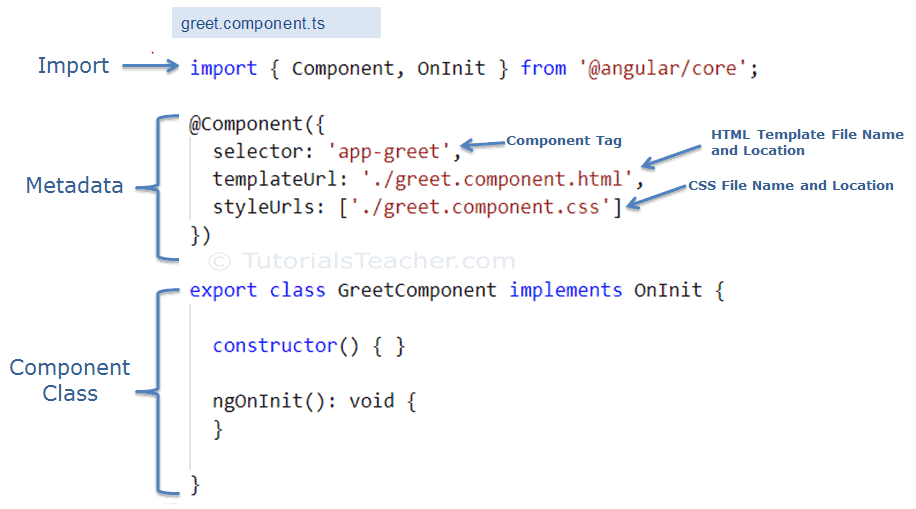

In this example we will have a look at components in Angular. We will see that components are an essential concept because they allow us to split an app into smaller parts which can be reused.
Obviously, this is in favor of DRY and seperation of concern.

As you can see, a component is split up into three main parts: template, style, script - whereas the script-part consists of a component class, a @Component() decorator storing its metadata and imports.
The component class can contain properties and methods. Also it is possible to inherit from interfaces and class, like OnInit, which is a special case because it is a angular-specific lifecycle hook. It contains the ngOnInit() method which is called when all of the data-bound properties of a component are initialized.